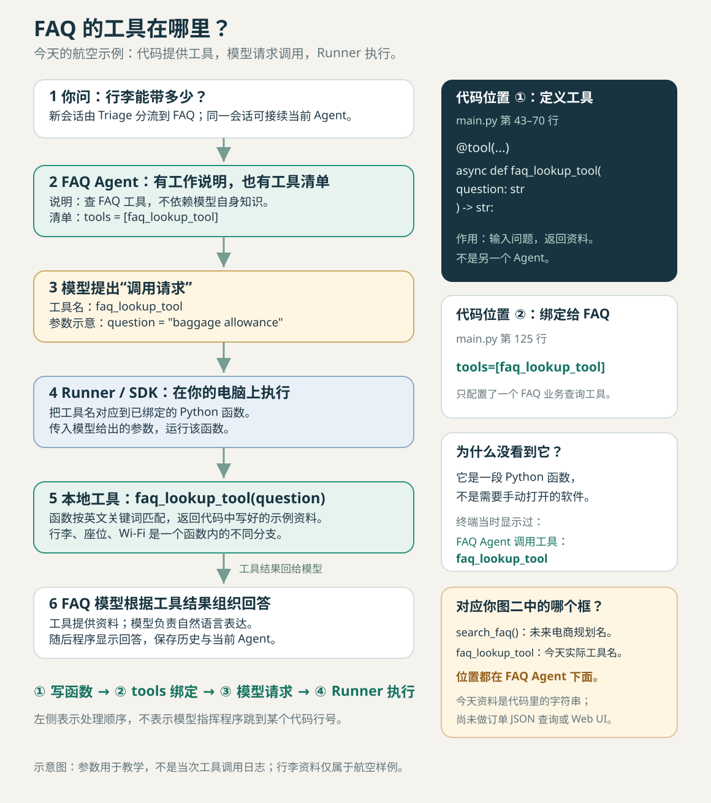
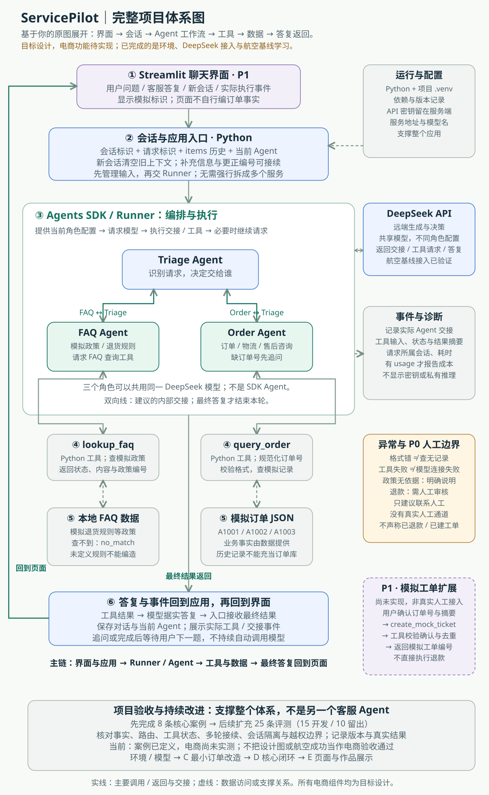
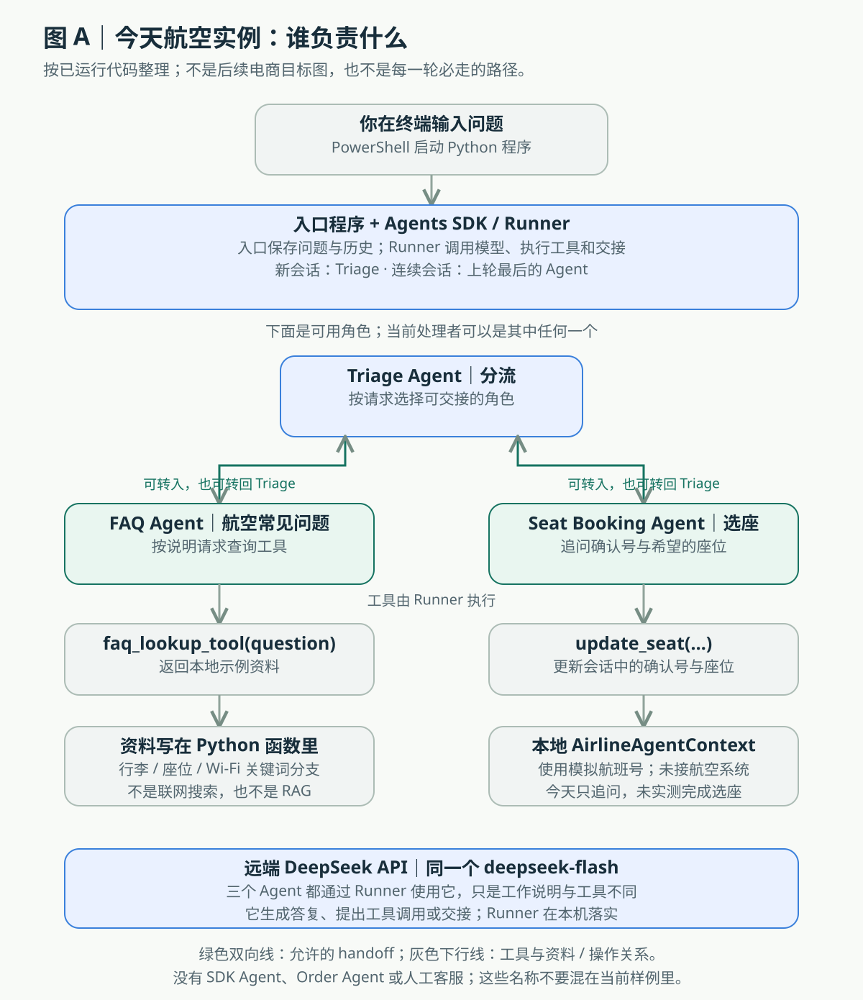
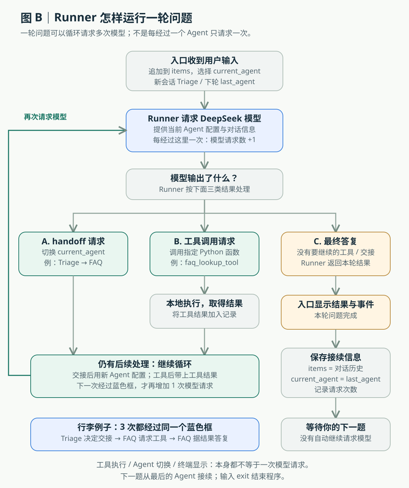

A：DeepSeek 接入与航空流程
- Python 3.13.16 与项目虚拟环境可用，依赖安装完成。
- 有效密钥下，DeepSeek 模型列表检查通过，
deepseek-flash可用。 - 行李、选座意图、Wi-Fi 共 3 轮真实对话，合计 12 次模型请求。
- 记录中有 6 次 Agent 转交、3 次
faq_lookup_tool调用。
运行证据：航空基线记录。已接入 DeepSeek 的官方业务示例，包含兼容适配。
今天已经完成 A 的真实运行与 B 的流程学习。你搭好了 DeepSeek 接入，看到客服转交和工具调用，并逐段理解了回答背后的代码职责。今晚可以收工，用这份复盘把零散对话串起来。
这一步的价值，是把“下载了代码”推进到“知道它如何产生回答”。
deepseek-flash 可用。faq_lookup_tool 调用。运行证据：航空基线记录。已接入 DeepSeek 的官方业务示例，包含兼容适配。
question 与历史记录 items。开发对话逐段读了实际代码，你确认已理解；按你的要求没有继续做复述考试。不把学习完成写成独立考试评分。
模型依据 Agent 的工作说明选择下一步，Runner 落实转交或工具调用，本地工具给出资料，模型根据资料组织回答，程序再把回答显示给用户。
| 真实问题 | 观察到的行为 | 能证明到哪里 |
|---|---|---|
| 行李能带多少？ What is the baggage allowance? | Triage → FAQ → FAQ 工具 → 行李回答。 | 这条路径已跑通。规则是本地示例文本，不是实际航空政策查询。 |
| 可以选座吗？ Can I choose my seat? | 承接上轮的 FAQ → Triage → Seat Booking，追问确认号。FAQ 在转回前也尝试了 FAQ 工具。 | 验证了选座意图分流与追问；没有实测完成座位更新。 |
| 飞机上有 Wi-Fi 吗？ Is Wi-Fi available on the plane? | 承接上轮的 Seat Booking → Triage → FAQ → Triage。FAQ 调用工具后表示未找到。 | 请求和转交完成，最终答复为“未找到相关信息”。这不是程序异常；答复与源码规则的对应关系尚未核对清楚。 |
这三个问题是在同一个连续会话中输入的。新会话只在开始时指定 Triage；每轮结束后，入口执行 current_agent = result.last_agent，下一句话先交给上轮最后接待的 Agent。第一轮结束在 FAQ，第二轮结束在 Seat Booking，所以后续起点不同；遇到其他职责的问题时，再转回 Triage 分流。
目标架构图展示的是新请求的主要分流关系，省略了多轮承接与返回箭头。“每轮都重新从 Triage 开始”也是可选设计，但当前代码没有这样重置。本次仅补充说明，没有改变运行行为。
Git 可回退版本、模拟电商订单工具、8 条电商案例、Web 界面和效果评测都还没完成。UI 已有文字提案。当前航空基线仍依赖下载仓库的示例定义。
时间取自今天的对话记录，为活动时段；不当作程序性能或工时统计。
确定 ServicePilot 模拟电商售后方向，写 PRD 与首批 8 条案例。把“按一周赶完”调整为按阶段验收：先跑航空示例，再读懂，再小步改造。
ZIP 下载、Python 64 位安装、PATH、PowerShell、进入目录、创建虚拟环境、安装依赖。遇到激活脚本限制后，直接调用虚拟环境里的 Python。
创建密钥与余额，配置当前会话，修正启动方式，排查空响应 HTTP 400。最后发现密钥输入格式问题，修复 Windows 粘贴与等待逻辑，模型检查通过。
完成行李、选座意图与 Wi-Fi 三轮。行李成功；选座停在确认号追问；Wi-Fi 客服答复为“未找到相关信息”，随后程序继续等待下一题，没有因此报错退出。这说明请求与交接能运行；答案是否正确，需要另外核对。本轮没有自动评测或转人工。
将目标与验收、开发、专项排障、界面设计分开。明确拆聊天不隔离文件；项目状态写在看板。界面设计产出提案，排障对话设为备用。
从输入讲到对话历史，从 Triage 讲到 Runner，再讲 FAQ 工具和答复显示。你提出“不用测试我”，后续改为解释与答疑，最终确认已理解。
主要排障发生在拆分对话之前的主线里；不能把这些修复算成备用排障对话已经完成的工作。
今天汇总
确定模拟电商售后方向、PRD、案例与阶段路线；早期还承接了 Python、密钥、HTTP 400 的排查。后面厘清四个对话的职责，安排 B-01 与本次复盘。
留下了什么
项目入口、看板、PRD、推进路线、交接规则、运行证据及本复习页。
以后回来做什么
完成一项任务后验收；确定下一项；调整产品范围；回顾“做了什么、凭什么算完成”。默认维护文档。
今天汇总
围绕一条行李请求逐段讲解实际入口、Agent、Runner、工具与多轮。解开“问题和历史”“谁决定和谁执行”“工具事实和模型答复”等混淆。
留下了什么
B-01 学习完成记录与具体代码位置。今天这段学习没有新增业务代码，也没有再次调用 API。
以后回来做什么
C-00 保存基线与建立 Git，然后改现有业务代码实现订单查询。普通小报错也在这里处理。
今天汇总
读取入口、看板和运行说明，确认已记录的 API 成功状态，准备具体问题的复现与交接模板。没有收到新的独立故障任务。
留下了什么
排障接手方式：预期、实际、命令、日志、已尝试办法、修改范围与验证。
以后回来做什么
同一问题经过两次有证据的修复仍失败，或排查较久没缩小范围时使用。接手写代码前暂停开发对话，结束后交还。
今天汇总
读 PRD、看板与案例，提出中文聊天页、输入区、新会话、模拟标识、执行事件及加载、空数据、错误状态。
留下了什么
界面与交互提案，包括后续接口需求。没有可操作原型、前端页面或电商后台接入。
以后回来做什么
核心业务案例稳定后细化 UI，再把实现交给开发对话。真实执行事件与预设演示样例须分清。
开工读入口与看板 → 只做一个任务 → 写下证据、失败项和下一步。同一目录只有一个对话在同一时间写代码；对话名称本身不提供文件隔离。
这里的“人”只是帮助理解职责的比喻。Agent 是程序配置；模型作决策，Runner 执行流程。
question 是本轮输入；items 是给模型继续处理的对话记录。把问题加入记录后，再交给 Runner。
items.append({"role": "user", "content": question})入口第 274、282 行。下面所有代码都是解释片段，不是需要你现在复制执行的命令。
计数看的是“程序向 DeepSeek 要了一次新的模型输出”，不是经过了几个 Agent。这条路径只有 Triage 和 FAQ 两个 Agent；FAQ 在查资料前、拿到资料后，各请求模型一次。三次都使用同一个 deepseek-flash，只是职责配置和本次提供的信息不同。
| 顺序 / 请求累计 | 谁的配置交给 DeepSeek | 模型返回什么 / 程序接着做什么 |
|---|---|---|
| 第 1 次 · 累计 1 | Triage Agent：用户问行李额度，可交给 FAQ | 模型提出转交 FAQ；Runner 执行 handoff，把当前 Agent 换成 FAQ。切换配置本身不另算一次模型请求。 |
| 第 2 次 · 累计 2 | FAQ Agent：问题、历史、查工具的说明和工具定义 | 模型提出调用 faq_lookup_tool，给出 question 参数。此时输出的是查资料请求，还不是最终行李答案。 |
| 本地执行 · 仍是 2 | 这一步不请求 DeepSeek | Runner 调用 Python 函数；函数按关键词返回行李资料。本次工具没有调用模型，所以不增加模型请求。 |
| 第 3 次 · 累计 3 | 仍是 FAQ Agent：这次还提供了工具返回的行李资料 | 模型据资料组织答复；Runner 返回结果，入口把答复显示在终端。这轮结束，没有自动发第 4 次请求。 |
所以“每碰到一个 Agent 就调用一次”不准确。一个 Agent 可能多次请求模型；本地工具执行、显示文字、等待输入都不自动增加模型请求。某次模型若直接给出最终答复，也可能一轮只用 1 次请求。
截图记录首轮 3 次、选座轮 4 次、Wi-Fi 轮 5 次；JSON 保存三轮合计 12 次。上表结合已见终端事件和 SDK 执行机制解释，并非逐条 API 请求原文回放；当次工具参数没有保存，不编造其具体内容。请求数不是问题数，也不是 token 数。
依据：入口程序第 284–311 行，以及 官方 Runner 执行说明。
目标架构图把 FAQ 下面的业务工具写成 search_faq()；今天航空示例实际叫 faq_lookup_tool。二者处于同一层，但前者是电商规划名称，后者是已运行的本地函数。
定义：下载仓库 examples/customer_service/main.py 第 43–70 行，函数签名在第 48 行：async def faq_lookup_tool(question: str) -> str:。输入问题，按英文关键词返回写在代码里的示例资料。
绑定：同一文件第 125 行 tools=[faq_lookup_tool]，表示“FAQ Agent 可以请求调用这个业务工具”。第 123 行工作说明要求查工具，不依赖自身知识。
怎么调用：SDK 把可用工具的名称、说明和参数格式提供给模型；模型返回工具名和参数，Runner 执行对应 Python 函数，把结果交回模型，再产生自然语言回答。模型不是临时翻遍你的代码仓库找工具。
为什么改名为“请求工具”：当前 FAQ 只有一个业务查询工具，同时还配置了转回 Triage 的交接入口。“选工具”容易让人误以为今天配置了很多查询工具。行李、座位、Wi-Fi 是同一个 FAQ 函数里的匹配分支，不是三个独立工具。
你今天其实看见过：终端显示 FAQ Agent 调用工具：faq_lookup_tool，随后显示已取得工具结果。这个工具没有独立软件窗口。

打开 PNG 图片 · 查看实际代码 · 官方 OpenAI 工具说明。图二中的 Streamlit、Order Agent 和订单 JSON 是目标规划，尚未实现。
你当时问的是 “飞机上有 Wi-Fi 吗？”（Is Wi-Fi available on the plane?），并没有问 Wi-Fi 密码。连续会话从上一轮的 Seat Booking 开始，本轮实际路径如下：
最后 Triage 表示没找到 Wi-Fi 信息，并问还有没有其他问题。终端显示“本轮完成，共 5 次模型请求”，然后出现下一题输入提示。这一条 Wi-Fi 问题已经结束；程序保持打开，等待你手动输入下一题。等待期间不会继续自动查 Wi-Fi，也不会持续调用模型。
没有转人工。当前航空示例只配置三个 Agent 之间的交接；运行入口和这段样例没有人工客服入口、人工队列或创建人工工单的工具。FAQ 转回 Triage，仍然是模型按另一套 Agent 配置接着处理，不能叫“接通人工”。
“后续质量检查的起点”是复盘中的学习建议，不是系统执行的一步。意思是：以后如果要查清回答为什么这样，就核对工具实际收到什么参数、返回什么资料、模型怎么利用结果。本轮并没有后台自动复查、评测或安排真人。正文已改为直接说明这些事实。
还要分清：模型说没找到，不证明源码没资料。当前函数有“免费 Wi-Fi，加入 Airline-Wifi”的示例规则，未提供密码。座位分支先匹配 plane，Wi-Fi 分支没有匹配带连字符的 wi-fi，这是排查线索；当次工具参数与返回文本没有记录，因此具体原因仍未确认。这里不是程序报错，也不是你电脑的 Wi-Fi 故障。
这里讲的是整个模拟电商售后项目。以你给的“Streamlit → Triage → FAQ / Order → 工具 → 本地数据”图为骨架，补全输入与会话、模型服务、SDK 调度、工具结果返回、异常、日志和验收。航空示例用于学习其中的机制，不能代替这个完整项目框架。
这是依据 PRD 与界面提案整理的目标体系图，不代表所有框都已实现。今天完成了 Python / SDK / DeepSeek 接入和航空基线学习；电商 Agent、工具、JSON 数据与 Streamlit 页面仍待开发。UI 和模拟工单按已有优先级推进，主图没有新增客服角色。

| 层次 | 项目中的组件 | 它负责什么 |
|---|---|---|
| 1 · 用户与界面 | Streamlit 聊天页面（P1） | 收问题、展示答复与实际事件，提供新会话；不自行生成订单事实。Streamlit 是页面框架，不是 Agent。 |
| 2 · 会话与应用入口 | Python 应用逻辑；会话标识、请求标识、历史、当前 Agent | 把用户消息交给工作流，保留追问信息；新会话清空旧上下文，旧请求晚到不能写入新会话。首版可在同一 Python 应用里组织，不要求另建 HTTP 后台服务。 |
| 3 · 编排与执行 | OpenAI Agents SDK / Runner | 按当前 Agent 配置请求 DeepSeek；执行工具或 handoff；有后续步骤就继续，得到最终答复后返回。 |
| 4 · 生成与决策 | DeepSeek API | 依据说明、历史与可用工具，提出转交、工具调用或自然语言答复。三个角色可以使用同一个模型，不必分别训练三个模型。 |
| 5 · 业务角色 | Triage / FAQ / Order Agent | Triage 分流与任务切换；FAQ 查政策；Order 追问订单号并查订单。Agent 是“说明 + 模型 + 可用工具 + 交接对象”等工作配置。 |
| 6 · 工具 | lookup_faq / query_order | Python 函数实际查询、规范化输入、返回结构化结果。模型提出调用，Runner 执行；数据校验不能只依靠提示词。 |
| 7 · 事实数据 | 模拟 FAQ / 本地订单 JSON | 政策与订单事实来源。对话历史记“用户说过什么”，业务数据记“订单或政策是什么”，两者不能混用。 |
| 8 · 输出与反馈 | 最终答复、工具状态、交接事件、页面状态 | 工具结果回到工作流，模型据结果答复；应用返回给页面，同时保留本轮历史与当前 Agent。追问时等待用户补充。 |
| 横向支撑 | 环境配置、事件日志、异常处理、验收 | 让项目可运行、可定位问题、可复现和评估。不是额外 Agent，也不是每条问题都必须经过的客服步骤。 |
query_order(order_id="A1001")。若没有订单号，则先追问，结束本轮并等待补充。FAQ 路径对应为：Triage → FAQ → lookup_faq → 模拟政策 → 据结果答复。它不是直接凭模型常识回答商家规则。
query_order 区分 ok / invalid_input / not_found / unavailable；lookup_faq 区分 ok / no_match / unavailable。格式错、没数据、工具故障需要不同答复。search_faq() 是原图的概念名称；PRD 正式工具约定写作 lookup_faq，职责都是查模拟政策，本图以 PRD 为准。query_order 名称保持一致。航空学习工具 faq_lookup_tool 和 update_seat 是参考实现，后续分别改造成电商政策与订单职责，不能把 Seat Booking 放进电商主图。
整体复述：用户通过页面提问，应用管理会话，Runner 编排 Agent 并请求 DeepSeek；模型选择交接或工具，工具访问模拟事实，模型根据结果回答，应用把答复与事件送回页面。配置、日志、异常和验收支撑整个过程。
设计依据：PRD · 界面提案 · 8 条核心验收案例。会话策略与具体实现组织是本次补充的设计建议，不改变已定义业务范围，也不把目标功能记成已完成。
先统一名称：Triage Agent 是分流角色；FAQ Agent 处理航空常见问题；Seat Booking Agent 处理选座。Agents SDK 是程序库，Runner 是里面负责调度的组件，今天没有一个叫“SDK Agent”的客服角色。
你参考的图属于 ServicePilot 的电商目标架构，里面的 Streamlit、Order Agent、search_faq()、query_order() 和订单 JSON 尚未实现。下面按照今天真正运行的航空代码画，先看“谁负责什么”，再看“程序怎样循环”。


| 层次 | 今天实际是谁 | 负责什么 / 代码位置 |
|---|---|---|
| 输入与多轮接续 | PowerShell 中运行的 Python 入口 | 保存问题到 items；新会话使用 Triage，下轮使用上轮 last_agent。入口第 259、274–282、310–311 行。 |
| 调度与执行 | Agents SDK / Runner | 请求当前 Agent 的模型，按输出执行交接或工具；有后续工作就继续，最终答复后返回。入口第 284–290 行。 |
| 远端生成与决策 | DeepSeek API / deepseek-flash | 三个 Agent 都使用同一模型；本次提供不同工作说明、可用工具和历史。航空示例第 105–116、130、145 行。 |
| 业务角色 | Triage / FAQ / Seat Booking | 分流、查航空资料、追问与更新座位。航空示例第 114–166 行配置职责与可交接对象。 |
| 本地资料与操作 | faq_lookup_tool / update_seat | 前者按关键词返回代码内示例资料；后者修改 AirlineAgentContext 中确认号与座位字段，没有接航空数据库。航空示例第 43–93 行。 |
| 展示与保存 | 入口程序打印结果，更新历史与当前 Agent | 显示答复和事件，累计请求次数，保存不含密钥和对话正文的诊断记录，再等待下一题。入口第 292–311 行。 |
把整个流程连成一句话：你输入问题 → 入口保存历史 → Runner 用当前 Agent 的配置请求 DeepSeek → 模型提出交接、工具调用或最终答复 → Runner 落实交接 / 工具并继续请求，或把最终结果交回入口 → 显示并保留历史与最后的 Agent → 等你的下一题。
选座能力的边界：代码已经定义 update_seat，并在交接时生成模拟航班号；工具只改本地会话字段。今天实际只走到追问确认号，没有执行完成座位更新，也没有真实订票系统。
以上是对现有代码与今日运行记录的教学整理；图不发 API 请求，不修改业务代码。航空示例源码 · 运行入口 · 官方执行循环说明。
先懂职责与关系，不要求今晚背语法或通读整个 SDK。点击卡片查看解释。
SDK：现成的开发工具箱，负责 Agent、工具与运行流程等基础能力。航空示例：用这个工具箱搭出的学习案例。ServicePilot：将逐步改造成模拟电商售后的个人项目。
今天是复用业务示例和接入模型；后面改 Agent 指令与业务工具。没有必要从空白写一套 SDK。
依据：PRD、推进路线；现有入口仍导入下载仓库的航空定义。
Python 是运行 .py 程序的解释器。PowerShell 是你输入命令、让电脑启动程序的终端环境。
看到 PS C:\…> 说明终端在等命令；看到程序的“请输入问题”才是在跟客服聊天。两种输入位置有不同含义。
venv 是什么？venv 是 Python 自带的、用来创建虚拟环境的工具（模块）。名字取自 virtual environment，即“虚拟环境”。安装 Python 后就可以使用它，不需要另外下载一个叫 venv 的软件。
venv 与 .venv 分清：venv 是建环境的工具；.venv 是它创建出来的环境文件夹，是常用名称，也可以换别的名字。可以把 venv 想成“建工具箱的方法”，把 .venv 想成“建好的工具箱”。
当时的命令怎样读？下面是已做操作的解释，不需要现在重新执行：
python -m venv .venvpython：启动已安装的 Python。-m venv：让 Python 运行它自带的 venv 工具。.venv：把环境创建在当前目录下这个名称的文件夹里。依赖是什么？就是项目代码需要的现成库，例如 Agents SDK。venv 负责创建隔离环境，pip 通常负责往环境里安装这些库；venv 本身不负责自动下载全部项目依赖或锁定版本。
小白解释：给这个项目准备一个专用工具箱：单独的 Python 运行入口和依赖安装目录。Python 负责读懂并执行代码，依赖库是代码要用的现成工具。
比如一个项目需要某个库的 1.0 版，另一个需要 2.0 版；分别装在各自虚拟环境里，可以避免共用安装位置造成版本冲突。它不隔离项目源代码，也不是安全沙箱。
你今天实际做的：先安装 Python 3.13.16，再用 python -m venv .venv 创建环境，把客服所需依赖安装进去。创建环境使用选定的 Python，不会自动下载另一个 Python 版本。
本次复核：这个环境基于系统安装的 Python 3.13.16；库版本为 Agents SDK 0.23.1、OpenAI 客户端库 3.28.0；include-system-site-packages = false，未启用共享系统第三方库。
激活只是方便选择运行入口。即使 PowerShell 不允许激活脚本，也可以用 .\.venv\Scripts\python.exe 直接运行。要以后重建同样环境，还需要记录 Python 与依赖版本，单靠 .venv 名称不保证可复现。
用词：这是隔离项目的运行依赖，不是训练模型。你的程序在本机运行，DeepSeek 模型通过远程 API 提供回答；今天没有训练或微调模型。
实际环境：openai-agents-python-main/.venv。依据 pyvenv.cfg 与该解释器的 sys.prefix、sys.base_prefix、库版本；本次核对未调用 API。
API 是程序向外部模型服务发请求的接口；密钥用于鉴权；地址决定发到哪里；模型名决定调用哪个模型。
今天使用 DeepSeek。代码导入 openai 客户端库，并不说明请求发给 OpenAI；实际客户端地址是 https://api.deepseek.com。
余额、密钥变量存在、密钥有效、业务调用成功，是四件不同的事。
Agent 在这里主要包含名称、工作说明、模型、可用工具与可转交对象。FAQ Agent 不是人工客服，也不是另开一台电脑。
多个 Agent 可以用同一个 DeepSeek 模型，却给它不同职责和工具。角色分工帮助组织流程，不自动保证效果更好。
Triage 是分流角色。模型按它的说明和可转交对象，判断行李问题交 FAQ，选座问题交 Seat Booking。
它不负责凭空生成业务事实；也不会因为列出了多个 Agent，就把一个问题同时交给全部对象。
当前航空示例：第 143–158 行。Order Agent 是后续电商规划。
Runner 调用模型，处理返回的消息、工具请求或交接；需要时执行工具、换当前 Agent，再继续请求模型。
“Triage → FAQ”是业务简图。更精确的执行关系是：模型按 Triage 的配置选择转交，Runner 落实切换并继续。
入口：第 284–290 行 Runner.run。
handoff 就是“把接下来的处理交给另一位已配置的 Agent”。例如 Triage 判断行李问题归 FAQ：模型输出 transfer_to_faq_agent，Runner 按程序配置切换到 FAQ 的说明和工具，然后继续请求 DeepSeek。
它不是按你假设的第 134 行跳到第 34 行再到第 178 行；发生变化的是“当前 Agent 配置”。SDK 循环依次处理模型输出，执行相应函数。
今天允许的交接：Triage → FAQ 或 Seat Booking；FAQ → Triage；Seat Booking → Triage。没有配置 FAQ 直接转 Seat Booking，也没有人工客服目标。
与普通工具调用的区别：工具调用是“请这个函数提供资料或做操作”，得到结果后原 Agent 通常继续处理；handoff 是“更换负责后续处理的 Agent”。它也由 SDK 以专门的工具形式提供给模型，但目的不同。
这三个 Agent 共用一个 DeepSeek 模型。转交不意味着启动三套模型、并行讨论或连接真人客服。
航空示例第 151–166 行配置交接目标。官方编排说明。
instructions 是工作说明：应该怎么处理问题。tools 是它可请求执行的功能：能够到哪里取得资料或进行操作。
FAQ 的说明要求调用工具、不要依赖自身知识；工具返回本地资料。光写一句“不要编造”不等于实现业务校验。
FAQ 配置第 114–125 行；关键工作说明在第 123 行。
@tool 把 Python 函数暴露为模型可请求的工具。模型给出工具名与参数，Runner 执行函数，而不是模型自己在电脑上随意执行代码。
今天的 FAQ 工具先转小写，再按英文关键词匹配，返回写在代码里的字符串。没有查询航空数据库，也没有搭建 RAG。
示例第 44–71 行。纯中文参数不直接匹配行李英文关键词。
question：本轮用户输入。items：可接续的对话记录。result：Runner 本轮运行结果，包含新消息、工具事件及最后的 Agent 等。
输入加入记录后不代表已经回答；运行完成后，程序提取消息文本显示，并将结果更新回下一轮历史。
items = result.to_input_list() 保留可接续的对话记录；current_agent = result.last_agent 保存最后处理的 Agent。
所以下一轮可能先由 FAQ 接待，而不总从 Triage 重来。需要换职责时，再通过交接返回分流。
模型组织语言，工具提供事实。以后订单回答必须依据本次订单工具的记录，不能把聊天历史或模型记忆当作订单数据库。
入口第 310–311 行。history 与 AirlineAgentContext 的结构化字段作用也不同。
记录当时的误解、有效做法与证据边界。已尝试的猜测不等于已证明的根因。
当时：不清楚下载的是工具、完整应用，还是最终要复刻的产品。
厘清：下载仓库提供 SDK 与示例；先只关注客服示例，把它跑通、读懂，再逐步改成 ServicePilot。航空只是学习场景。
记住：每次行动先回答“为哪个目标做、预期看见什么”。不按仓库大小衡量项目进度。
当时：py 不存在、python 指向 WindowsApps 占位入口，安装页面有多个包。
解决：选择当时适合这台电脑的 Windows 64 位安装程序，勾选 PATH；安装后新开终端，用 python --version 看到 3.13.16。
记住：命令不存在先查解释器与路径；不是客服业务代码必然出错。这里复盘当时选择，不作为未来所有设备的安装建议。
当时：Activate.ps1 被 PowerShell 执行策略阻止。
解决：直接调用虚拟环境的 python.exe，版本检查与依赖安装通过。
记住：激活失败不等于环境创建失败。先用明确的解释器路径缩小问题，不需要为此扩大系统权限。
当时：Read-Host -AsSecureString 只是把输入保存到 $deepseekSecret，尚未放到程序读取的环境变量。
解决：完成当前进程变量赋值后，Test-Path Env:DEEPSEEK_API_KEY 变成 True；随后还要实际做鉴权检查。
记住：True 只证明变量存在，不证明密钥正确，更不证明余额或业务效果。
当时：密钥输入实际只收到一个不可见控制字符，程序退出；后续粘贴到 PowerShell 被当成命令，并出现在截图中。
解决：本机输入逻辑支持 Ctrl+V、仅显示星号；格式错时继续留在程序里等待。重新输入后模型检查和问答通过。
记住：先看屏幕当前在等“API key”还是终端命令。不要把密钥放入聊天、代码或报告。截图中暴露过的旧密钥应撤销并更换；撤销状态未在项目中确认。
当时：直接以文件路径启动客服 main.py，它导入的 examples.auto_mode 找不到。
解决：在下载仓库根目录通过 -m examples.customer_service.main 启动，进入问题输入环节。后续改用 ServicePilot 的兼容入口。
记住：相同代码用不同启动目录或方式，模块搜索路径可能不同。命令、目录、解释器三者都要记录。
当时：尝试过工具 strict/schema 和接口兼容方向，但空白 400 没有直接给出根因。
有效缩小：模型列表检查也返回 400，说明不必先把问题归到客服工具调用；再检查密钥输入，发现控制字符。输入修复后有效密钥下通过。
证据边界：没有单独验证早先每次 400 与控制字符之间的因果关系，不能写成“唯一根因已证明”。
记住：错误码是线索。保留命令、响应、最小检查结果，不在无新证据时反复改大段代码。
当时：看到代码变量，但没有理解各自保存什么，以为把问题追加进去就开始回答了。
厘清：question 一条输入，items 一组记录；追加后再交 Runner 处理。最终从运行结果提取文本。
记住：看变量先问“它是什么数据、什么时候变化、下一步谁使用”。
当时：把业务简图与程序执行机制混在一起，误以为 Triage 自己运行另一位客服，或同时分给 FAQ 和 Order。
厘清：模型按 Triage 的职责选择目标；Runner 执行交接；FAQ 按自己的说明继续处理。今天的航空对象是 FAQ 与 Seat Booking，Order 是后续产品规划。
记住：“谁决定”与“谁落实”分开讲，一次交接也不等于多个 Agent 并行。
当时：工作说明给出的定位范围太宽，看到第 114 行没找到关键句；也不确定工具是联网搜索还是本地函数。
厘清：FAQ 工作说明的具体句子在示例第 123 行；工具第 48–71 行按英文关键词返回本地字符串。模型接到结果后组织自然语言。
记住：解释代码应给出实际文件、精确位置和原句。文件名相同不代表同一个文件；以后理解与修改都认准路径。
先回忆当时发生了什么：你在连续会话中问“Is Wi-Fi available on the plane?”（飞机上有 Wi-Fi 吗？）。客服转交并调用了 FAQ 工具，最终回答没有找到 Wi-Fi 信息；屏幕随后显示“本轮完成，共 5 次模型请求”，并继续等待下一题。这里记录的是客服回答内容，不是程序报错，也不是你电脑的 Wi-Fi 出故障。
“未达到预期”指什么？这是汇总时对照源码规则作出的评价，不是当时已经约定的一条 Wi-Fi 验收标准。为了避免误解，正文已改成实际观察：“客服回答未找到信息，程序正常完成这一轮”。它与前面接入阶段的 HTTP 400 是两件不同的事。
原先判断需更正：源码明确有“免费 Wi-Fi，加入 Airline-Wifi”的示例规则，不能把未找到回答等同于源码无资料。
复查线索：座位分支包含 plane 且排在 Wi-Fi 分支前；Wi-Fi 分支匹配 wifi，没有 wi-fi。若传入原问题 Is Wi-Fi available on the plane?，会先匹配座位分支。
尚未确定：模型当次传给工具的实际参数没有保存，可能经过改写。本次没有重跑 API，因此这只是具体的源码线索，此次“未找到信息”答复的具体原因仍待复现。
记住：流程完成、工具执行、答案正确是不同验收层次。模型说“不知道”不能代替检查实际工具输入与输出。
当时：原来的复刻路线被安装、接入、报错淹没，担心模型找不到前面决定。
解决：明确四类对话职责；以入口、看板、PRD 和交接卡保存当前状态。模型升级也不能替代这些记录。
本次同步：开发看板已写 B 完成，但入口、路线和开发开场仍留着 B-01。本次复盘统一为“下次 C-00”，防止回看时被旧状态误导。
记住：任务编号是定位标签，不是要背的知识。让新对话读一张准确交接卡，比粘贴全部历史更可靠。
这些方法可以带到以后的订单查询、界面设计和作品说明里。
一个能运行的样例是参照物。先保留它，再改一个业务工具，才能比较“我具体改了什么、结果发生了什么变化”。
下一次的直接应用：C-00 保存基线，随后只做 A1001 查询。
环境检查 → 密钥格式 → 模型可用性 → 最小生成 → 完整业务。某一步失败，就先分析这一层，避免把所有红字都归到模型能力。
有效记录：命令、路径、预期、实际、已尝试、证据和未确定项。
会聊天不等于会查订单。订单来自工具记录；规则来自业务资料；没有退款执行工具，就不能声称已退款。
以后需要工具层校验与实际事件，不只依赖“不要编造”的提示词。
今天有真实运行证据；Wi-Fi 返回“未找到信息”，具体原因待核对；电商产品还没实现。把范围说清楚，本身就是产品经理的能力。
有 usage 才报告 token 或成本；没有数据就保留未知，不把模型请求数当作费用。
“正在处理”“未找到”“查询失败”需要不同状态。内部 Agent 转交不能包装成接入人工；样例动画不能当实际执行证据。
设计提案已列出这些状态，未来实现还需要会话隔离与真实接口。
业务比喻让你入门，精确代码位置让你确认。可以暂时不懂全部 Python，但要能分清输入、说明、模型决策、执行和数据。
今天你不断追问“是什么意思、为什么这么做”，帮助把操作变成了理解。
可直接使用：“我在做一个模拟电商售后的 Agent 项目。目前先复用了 OpenAI Agents SDK 的官方航空客服示例，作为学习和运行基线。我借助 Codex 搭建 Python 环境，用 Python 自带的 venv 创建独立运行环境，并在里面安装项目依赖；再配置 API 密钥、服务地址和模型名，接入 DeepSeek。随后实际验证了 Agent 转交和 FAQ 工具调用，并逐段理解输入、分流、工具执行和答复的路径。目前运行与流程学习已完成；电商订单查询和 Web 界面还没有实现，是后续改造目标。”
这句话的通俗意思：“我先装好运行代码所需的 Python，再给这个项目准备专用工具箱、装好需要的库，最后填写 DeepSeek 的访问凭证、接口地址和模型名称，让程序能够向模型服务发请求。”
问“虚拟环境有什么用”：“它让项目依赖安装在独立位置，减少不同项目库版本冲突。我先安装 Python，再创建 .venv 并安装所需库。它管理运行依赖，不承担模型训练。”
问“你自己做了什么”：“代码接入和排障有 Codex 协助。我确定了产品方向、需求与验收案例，按指引完成本机安装、密钥配置和真实运行，并逐段学习关键流程。后续会在保存的航空基线之上实现订单工具和异常处理；还没有完成的部分不计入当前成果。”
问“跑通就代表可用吗”：“我完成了 3 个航空问题、12 次模型请求的流程验证。选座只验证意图与追问；Wi-Fi 返回“未找到相关信息”，原因尚未确认，未做独立正确性验收。电商 8 条案例已定义但尚未运行，因此我不会把运行基线当作完整产品验收。”
按自己节奏回看；勾选只用于个人阅读进度，不作为项目验收或能力测试。
用户输入先进入对话记录；模型按 Triage 的说明选择交给 FAQ，Runner 切换并继续；FAQ 请求工具，Runner 执行本地函数；模型参考返回资料写答复，程序显示并保存可接续的记录。
不需要复述给我，也不要求一字不差。这个解释用来帮助回想。
笔记尝试保存在当前浏览器本地。换浏览器或清理数据可能丢失；重要内容请下载备份。请勿填写 API 密钥。
笔记仅在本机浏览器保存。
清除勾选不会删除笔记，也不改变项目看板。
今天可以到这里。下次先建立可回退版本，再改电商功能。
当前入口依赖下载仓库，两边都还没有 Git。需要先明确哪些文件属于你的产品、哪些是保留的航空参照、怎样记录依赖；这样修改出问题时有恢复依据。
C-00 完成标准：明确代码与依赖范围；保留现有文件和航空基线；建立可回退的 Git 记录与功能分支；密钥和 .venv 不进入版本控制。由开发对话实际检查和操作，主线按结果验收。
先读取 开始这里.md、ServicePilot/docs/任务看板.md 和 ServicePilot/docs/对话分工与模型.md。 今天 A 的真实运行与 B-01 的流程学习已完成。现在只做 C-00：核实当前代码与依赖关系，保留航空学习基线，建立 Git 可回退记录和个人功能分支。 不要覆盖现有工作，不把密钥和 .venv 入库；每个操作说明为什么做和预期结果，不用测试我。 完成后写回文件范围、版本/分支、验证证据、未完成项与下一步。C-00 通过后，再进入 C-01 模拟订单查询。
“我的订单 A1001 到哪了？” → query_order → 模拟记录 → 已发货、模拟物流、MOCK1001。不编造送达日期。对应验收案例 C02；这里“C-01”是开发任务号，“C02”是案例号，两者不是同一编号体系。
再往后：8 条核心案例稳定 → 简洁界面 → 扩展评测与作品材料。Wi-Fi 的答复与工具匹配线索保留为复习记录，不把补全航空业务变成电商主线的新任务。
链接指向同一文件夹里的资料；移动报告时请保留目录关系。看板随项目更新，本页是今天的阶段快照。
ServicePilot/scripts/run_deepseek_customer_service.py：233 行导入示例；259 行初始 Triage；274/282 行输入与记录；284–290 行 Runner；302–303 行显示；310–311 行保存历史与最后 Agent。
下载仓库 examples/customer_service/main.py：44–71 行 FAQ 工具；58–69 行座位/Wi-Fi 分支；114–125 行 FAQ Agent；123 行工具使用说明；143–158 行 Triage。
行号以本次复查代码为准，后续修改会变化。不要把安装目录里的 SDK 库文件当业务文件修改。